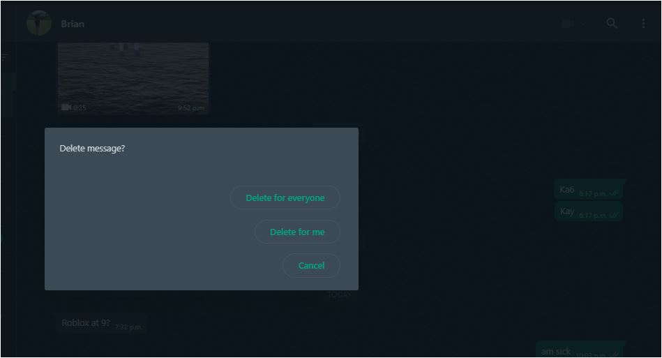

Link: https://web.whatsapp.com/
I Like
- The non complicated features
- Straight Forward interface
- Easy to learn navigation
I Wish
- Delete feature was different
- The Delete feature doesnt show recipient that you deleted a message
- There was a way to choose the correct deleting option after accidentaly pressing one.
What if
- The Delete feature actually doesnt show that you deleted a measure
- There was a way to undo the deleting option for a longer period of time.